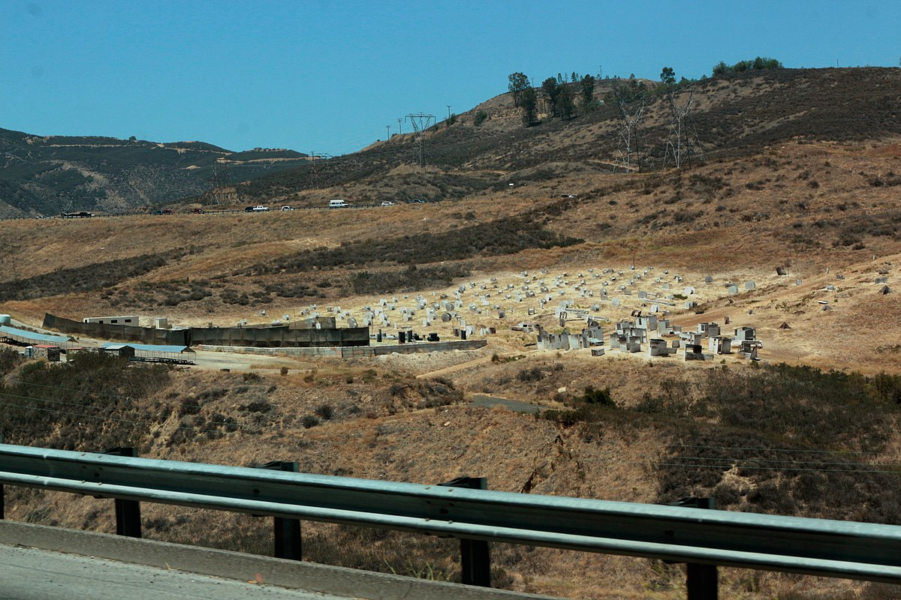

Paintball , rakip takımların oyuncularının, paintball işaretçileri adı verilen HPA / CO 2 ile çalışan hava tabancalarıyla atılan yuvarlak, kırılabilir, boya dolu yağ ve jelatin topaklarla ( " paintball " ) vurarak rakiplerini oyun dışı bıraktığı rekabetçi bir spordur. . Oyuncuların taktik siper olarak kullandıkları, doğal veya yapay araziye dağılmış kapalı veya açık sahalarda oynanabilir. Paintball oyun türleri değişir, ancak bayrağı kapmayı içerebilir, eleme, cephane limitleri, belirli bir noktayı veya alanı savunma veya saldırma veya oyun alanında gizlenmiş ilgi çekici nesneleri ele geçirme. Oynanan varyanta bağlı olarak oyunlar, senaryo oyununda saniyelerden saatlere, hatta günlere kadar sürebilir . Oyun 1980'lerde geliştirildi ve şu anda büyük turnuvalar, profesyonel takımlar ve oyuncuları içeren organize yarışmalarla resmi bir spor seviyesinde düzenli olarak oynanıyor.
Paintball , oyuncuların rakiplerini paintball adı verilen ve çarpma anında kırılan boya dolu küresel jelatin kapsüllerle vurarak oyundan çıkardıkları rekabetçi bir takım atış sporudur . Paintball'lar genellikle , basınçlı hava veya karbondioksitle çalışan ve orijinal olarak ağaçları ve sığırları uzaktan işaretlemek için tasarlanmış, paintball işaretçileri adı verilen düşük enerjili hava silahları kullanılarak vurulur.
Oyun, Mayıs 1981'de New Hampshire'da bir Wall Street borsa tüccarı olan Hayes Noel ve bir doğa adamı ve yazar olan Charles Gaines tarafından icat edildi. Gençliğini avlanarak, balık tutarak ve kulübeler inşa ederek geçirmiş bir adama karşı, bir şehirlinin ormanda hayatta kalma içgüdüsüne sahip olup olmadığı konusunda aralarında bir tartışma çıktı. İki adam, bir çiftlik kataloğunda bir boya tabancası reklamını tesadüfen gördüler ve onu diğer 10 erkekle bireysel yarışmada tartışmalarını çözmek için kullanmak için ilham aldılar ve sonunda paintball sporunu yarattılar.
Spor rekreasyon için oynanır ve ayrıca büyük turnuvaları, profesyonel takımları ve oyuncuları içeren organize yarışmalarla resmi bir spor seviyesinde oynanır. Paintball teknolojisi ayrıca askeri kuvvetler, kolluk kuvvetleri, paramiliter ve güvenlik kuruluşları tarafından askeri veya diğer eğitimleri desteklemek için kullanılır.
Oyunlar, farklı büyüklükteki kapalı veya açık alanlarda oynanabilir. Bir oyun alanı, oyuncuların taktiksel koruma için kullandıkları doğal veya yapay araziye sahip olabilir . Oyun türleri ve hedefler değişir, ancak bayrağı ele geçirme , eleme, belirli bir noktayı veya alanı savunma veya saldırma veya oyun alanında gizlenmiş ilgi çekici nesneleri ele geçirmeyi içerir. Oynanan varyanta bağlı olarak oyunlar, "senaryo oyununda" dakikalardan saatlere ve hatta günlere kadar sürebilir.
Sporun yasallığı ve paintball işaretçilerinin kullanımı ülkeler ve bölgeler arasında farklılık gösterir. Düzenlenmiş oyunun sunulduğu çoğu alanda oyuncuların koruyucu maske takması, namluyu engelleyen güvenlik ekipmanı kullanması ve güvenli oyun kurallarını katı bir şekilde uygulaması gerekir.
Kullanılan paintball ekipmanı oyun türüne bağlı olabilir, örneğin: odun topu , hızlı top veya senaryo ; kişinin ekipmana ne kadar para harcamak istediğine; ve kişisel tercih. Bununla birlikte, hemen hemen her oyuncu üç temel ekipman kullanacaktır:
Sık oyuncular, turnuva katılımcıları ve profesyonel oyuncular arasında yaygın olarak görülen ek donanımlar şunları içerir:
Paintball, oyun başlamadan önce belirlenen potansiyel olarak sınırsız sayıda kural ve varyasyonla oynanır. En temel oyun kuralı, oyuncuların vurulmadan ve bir paintball ile işaretlenmeden bir hedefe ulaşmaya çalışması gerektiğidir. Bir vuruşun yasallığını düzenleyen, "her şey önemlidir" (hitler, paintball kırılsa ve iz bıraksa da bırakmasa da elenmeye neden olur) ile en yaygın varyasyona kadar değişir: paintball kırılmalı ve boyutunda bir iz bırakmalıdır. ABD çeyreği veya daha büyük. Elenen oyuncuların oyun alanını terk etmesi beklenir; elemeler ayrıca rakip takıma puan kazandırabilir. Oyuncu üzerinde anlaşılan oyun kurallarına bağlı olarak sahaya dönerek oynamaya devam edebilir veya oyundan tamamen elenir.
Oyunun özel hedefi, oyun başlamadan önce belirlenir; örnekler , bayrağı ele geçirmeyi ve elemeyi içerir. Paintball , doğal ortamda oynanan ve geniş bir alana yayılan odun topu da dahil olmak üzere popüler çeşitleri ortaya çıkardı. Tersine, hızlı top çeşidi daha küçük bir sahada oynanır ve (NSL)'de iki dakika on beş saniye kadar kısa veya PSP'de (Paintball Spor Promosyonları) yirmi dakikaya kadar süren oyunlarla çok hızlı bir tempoya sahiptir. Başka bir varyant, oyuncuların tarihsel veya kurgusal ortamları yeniden yaratmaya çalıştıkları senaryo paintball'dur .
Turnuvalar beceriye dayalı yarışmalardır. Bunlar genellikle Speedball (paintball) sahalarında gerçekleştirilen, 5 kişilik takımların olduğu grup turnuvalarıdır. NXL gibi turnuvalar, yaz aylarında Amerika Birleşik Devletleri'nin her yerinde çeşitli beceri bölümleriyle farklı etkinlikler düzenler. Ultimate Woodsball League (UWL) gibi diğer seriler, geniş ormanlık alanlarda büyük takımlarla turnuvalar oynar. Turnuva türleri ve uygulanabilir beceri bölümleri, paintball yarışmacılarının farklı ilgi alanlarına hizmet etmek için çılgınca değişir.
Speedball, bir futbol sahasına benzetilebilecek açık bir sahada oynanır, minimum doğal engellerle düzdür ve bazen özellikle kapalı sahalarda suni çim kullanılır. İlk hızlı top sahaları, koruma sağlamak için zemine kazıklanmış düz ahşap engellerle inşa edildi; bu konsept, gündelik oyun için daha büyük bina benzeri engellere sahip bir dizi kentsel senaryo saha stiline daha da geliştirildi, ancak hızlı topun kendisi, daha değişken bir saha düzeni ve bazı "verme" sunan plastik drenaj borusundan yapılmış daha küçük engeller kullanmaya doğru ilerledi. artan güvenlik için engellere. Bu oyun tarzına genellikle "Hipertop" adı verilirdi. Sonunda, "yılan" gibi önceki alanlardaki yaygın engel şekillerine dayalı olarak şişirilebilir kumaş "sığınakları" geliştirildi. ve "kutu" sığınakları. Genellikle "Airball" olarak adlandırılan bu şişirilebilir engellerin kullanımı, hem engellerle çarpışmalardan kaynaklanan potansiyel yaralanmaları azaltarak oyuncu güvenliğini artırır hem de sahayı yeniden yapılandırmak veya geçici alanlar kurmak için kolayca hareket ettirilmelerine olanak tanır.
Woodsball veya "Bushball", oyunun orijinal biçimini ifade eden oldukça yeni bir terimdir: takımlar, değişen miktarlarda gizlilik ve gizlenme taktiklerinin avantaj sunabileceği, ormanlık veya doğal bir ortamda rekabet eder. Terim genellikle özel senaryo tabanlı oyunun eşanlamlısı olarak kullanılır, ancak teknik olarak, insan yapımı engeller yerine, esas olarak doğal araziden ve ağaçlar ve setler gibi örtüden oluşan alanlarda oynanan hemen hemen her türlü paintball anlamına gelir. Genellikle oyun modu takım ölüm maçıdır , ancak bazen bayrağı ele geçirmek veya başkanı korumaktır.(bir oyuncunun "başkan" olarak seçildiği yerde, başkanın takımı başkanı korumalı, düşman takım başkanı ortadan kaldırmalıdır).
Genellikle "Büyük Oyunlar" veya "Senaryo Oyunları" olarak anılır. "Büyük Oyunlar", bölge kontrolüne dayalı oynanışı ifade ederken, "Paintball Senaryosu", görevlerin her iki tarafa da belirli aralıklarla verildiği bir oyunu ifade eder. Öncülüğünü Wayne Dollack'ın üstlendiği "Scenario Paintball", Canlı Aksiyon Rol Yapma etkinliklerine çok daha fazla odaklanarak oyunun içine daldırılmalarını, hikayelerini ve oyun mekaniklerini oyunun paintball yönünün üzerine çıkarıyor. Bu oyunların pek çok varyasyonu ve kombinasyonu şu anda oynanmaktadır ve her etkinlik ve etkinlik üreticisi için benzersizdir. Oyun, bulunduğu tüm alanı kullanır ve tüm normal oyun alanlarını 1 büyük oyun alanında birleştirir. Senaryo formatının popüler örnekleri, Paintball'un Wayne's World'deki (Ocala, Florida) Büyük Finali, Coram'daki Cousin's Big Game,Oklahoma D-Day (Wyandotte, Oklahoma'da), PRZ Paintball'da (Picton, Ontario) Fight For Asylum, Flag Raiders Paintball'da (Kitchener, Ontario), Battle Royale, Sherwood Forest'ta (La Porte, Indiana) Sherwood Classic ve Ücretsiz Low Country Paintball (Ludowici, GA) etkinliklerinde final, 100 ila 5000 oyuncu çeker ve en az 6 saat kesintisiz oyun oynar, çoğunlukla 2 günde ortalama 12 saat oyun oynanır. "True24" senaryo etkinlikleri kesintisiz olarak en az 24 saat sürer ve en sonuncusu Mayıs 2019'da Sherwood Ormanı'nda gerçekleşir. Bu formatlar çok çeşitlidir ve genellikle tarihsel MilSim, film veya popüler kültür temalıdır.
MilSim ("Askeri Simülasyon"), belirli hedeflere ulaşmanın oyunun en önemli yönü olduğu askeri gerçekliğe daha yakın bir deneyim yaratmak için tasarlanmış bir oyun modudur.
MilSim, muharebe lojistiği, görev planlama ve yürütme ile sınırlı kaynaklar ve mühimmatla ilgilenme konularını ele alır. Oyunculara herhangi bir geleneksel paintball oyununda olduğu gibi boya çarptığında oyundan elenir. MilSim, paintball'a benzer bir spor olan Airsoft'ta da oynanan popüler bir oyun modudur.
First Strike gibi şekilli mermilerin ortaya çıkışı ve bunun sonucunda dergi beslemeli işaretçilerin gelişmesiyle, menzil, isabet ve MILSIM gerçekçiliğinde önemli bir artış elde edildi. İşlevsel olarak, dergi beslemeli keçeli kalemlerin bir istisna dışında diğer paintball keçeli kalemlerinden hiçbir farkı yoktur. Boya toplarının, işaretçinin üzerinde bulunan hacimli bir huniden yerçekimi ile beslenmesi yerine, şekilli mermiler (veya boya topları), işaretçinin altından yaylı bir dergiden beslenir. Hem yerçekimi beslemeli hem de şarjör beslemeli işaretçilerin kalibresi aynıdır (.68 kalibre) ve hızları da genellikle aynıdır. Şekillendirilmiş merminin artan menzili ve doğruluğu, şekillendirilmiş merminin sahip olduğu daha yüksek balistik katsayısından gelir, ve mermiye yivli bir namludan ve merminin üzerindeki kanatçıklardan uygulanan jiroskopik dönüş. Şarjör beslemeli işaretçiler ve şekilli mermiler, işaretçi tasarımlarının gerçek (gerçek çelik) ateşli silahların stiline ve işlevselliğine daha yakın olmasını sağladı ve bu da paintball'a MilSim ortamında Airsoft ile rekabet etmesi için daha iyi bir yol sağladı.
Yalnızca Mag-Fed Oyunu. Geleneksel paintball "hazne" veya "yükleyici" gibi toplu yükleme cihazlarını ve Dye BoxRotor, Maxxloader sırt çantası ve AGD Çözgü Besleme gibi altına veya arkaya monte toplu yükleyicileri yasaklayan, giderek daha popüler hale gelen bir oyun tarzı. Bu oyun tarzında, tüm kalemler bir şarjörü kabul etmelidir, bu da boyama kapasitelerini büyük ölçüde sınırlandırır ve popüler First Person Shooter video oyunlarına çok daha benzer bir paintball türü yaratır.
Katılımcıların kapalı bir parkurda hareket ettiği ve birbirini izleyen hedeflere ateş ettiği tek oyunculu bir paintball eğlencesi. Koşular sürelidir ve oyuncular arasındaki rekabet, en hızlı olmak için yarışan bir liderlik tablosu aracılığıyla gerçekleştirilir.
Statik (veya mobil) bir eğlence mekanı. Mekan personeli yastıklı ve zombi gibi giyinmiş. Paintball işaretleyicileri, düz yataklı bir treylere monte edilir. Katılımcılar, mülkün içinden çekilerek "Perili Hay Ride" tarzı bir cazibe merkezine götürülür ve burada paintball'larla zombi ordularına karşı kendilerini savunurlar. Cephane olarak genellikle siyah ışıklar ve karanlıkta parlayan paintballlar kullanılır.
Düzenlenmiş oyunlar , kuralların uygulanmasını ve oyuncuların güvenliğini sağlamak için parkurda devriye gezen hakemler veya görevliler tarafından denetlenir. Bir oyuncu boya ile işaretlenmişse, onu çağırır, ancak yarışmacıların da onur kurallarına uyması beklenebilir ; kırık bir top, eleme anlamına gelir. Saha operatörleri, yalnızca belirli vücut konumlarına (yalnızca baş ve gövde gibi) bir etiketin zorunlu kılınması gibi, bu kuralın varyasyonlarını belirtebilir. Güvenliği sağlamak, oyunun adilliğini dengelemek veya hileyi ortadan kaldırmak için mekana bağlı olarak uygulanabilen oyun kuralları vardır.
Oyuncu ve takım stratejisi, sahanın büyüklüğüne ve düzenine ve oyuncuların toplam sayısına ve deneyim düzeyine göre değişir. En temel strateji, ekip üyelerini tüm olası ilerleme hatlarını kapsayacak şekilde başlangıç istasyonları arasındaki çizgiye kabaca dik olan alan boyunca dağıtmak için ekiple koordinasyon sağlamaktır; hepsi aynı yönde koşan bir takım, karşı tarafta sahada hareket eden rakipler tarafından kolayca kuşatılır. İkinci bir temel hedef, sahadaki avantajlı engellere ilk ulaşan kişi olarak veya her oyuncunun sahip olduğu yön sayısını azaltmak için bir veya daha fazla rakibi hızla ortadan kaldırarak, sahanın mümkün olduğunca büyük bir kısmını mümkün olduğunca erken kontrol etmektir. gelen boyayı izlemek için. Bir ekip üyelerinin arkalarında ne kadar çok bölge varsa,
Orta ve ileri stratejinin kilit unsuru, "ateş yolları" kavramıdır. Bunlar, sahadaki engeller arasındaki ve dolayısıyla potansiyel olarak arkalarındaki sahadaki rakip oyuncular arasındaki net görüş hatlarıdır. Bir şerit, rakip takımın en az bir oyuncusu şerit boyunca ateş edebiliyorsa "işgal edilmiş" ve dost ya da düşman herhangi bir oyuncu şerit boyunca ateş ediyorsa "aktif"tir. Dolu ve aktif şeritler, oyuncunun vurulma ve elenme riskiyle karşı karşıya kalması nedeniyle oyuncu hareketini engeller. Seyrek örtülü açık sahalar, sahadaki sığınakların çoğu veya tamamı arasında genellikle uzun açık şeritlere sahiptir ve bunların çoğu aktif değilse işgal edilecektir. Bu nedenle oyuncular, sığınaklarına giden ve sığınaklarından hangi şeritlerin diğer takım tarafından işgal edildiğini takip etmelidir, böylece oyuncu sığınağın kendileri ve rakip(ler) arasında olduğundan emin olabilir. Bu, atış şeritleri ne kadar doluysa o kadar zorlaşır; sahadaki mevcut atış şeritlerinin çoğu işgal edildiğinde, her takım bastırma ateşi kullanarak en az bir yönde koruma oluşturmalıdır (rakibin bulunduğu yere gönderilen mermiler, onları ortadan kaldırmaktan çok başlarını aşağıda tutmak için tasarlanmıştır). Nispeten daha az engelle küçük açık alanları kullanma eğiliminde olan Speedball, her oyuncunun bir oyun sırasında rakiplerini kendi başına sıkışmaması için yüzlerce paintball kullanmasını gerektirir. Tersine, sahadaki atış şeritlerinin çoğu boşsa, her takımdaki oyuncular daha fazla hareket kabiliyetine sahiptir ve bir rakibi sabitlemek için koruma ateşi kullanmak, oyuncu uzun mesafeler hareket ederken siper arkasında kalabileceğinden daha az kullanışlıdır, bu nedenle oyuncular daha az ateş etme eğilimindedir. ve net atışlar elde etmek için daha fazla hareket edin.
Tipik olarak, strateji, gündelik yürüme tarzı paintball oyunu için sınırlıdır. Oyunların başında, oyuncuları sığınaklar arasında dağıtmak ve geride kalacak ve ilerleyen saldırganları koruyacak savunucuları atamak gibi taktik ve strateji üzerine kısa tartışmalarla bazı ekip çalışmaları görülecektir. Bununla birlikte, orta ve geç oyun taktikleri, sahada koordineli bir tarama yerine, birbirine yapışan veya izole saldırılar yapan oyuncu gruplarıyla sınırlı olma eğilimindedir. Takım paintball turnuvalarında, açılıştan oyun sonuna kadar her oyun boyunca daha ciddi planlanmış takım taktikleri ve stratejisi görülür. Takımlar genellikle birlikte çalışırlar ve turnuvada kullanabilecekleri taktikler planlarlar ve takım arkadaşlarının her birinin oyun sırasında çeşitli durumlarda ne yapmaya çalışacağını bilirler.
Paintball, hem ücretli giriş gerektiren ticari mekanlarda hem de özel arazide oynanır; her ikisi de değişen boyut ve düzende birden çok alan içerebilir. Tarlalar, doğal veya yapay arazi ile dağılmış olabilir ve ayrıca ormanlık veya kentsel alan gibi belirli bir ortamı simüle etmek için temalı olabilir ve tarihsel bir bağlam içerebilir. Daha küçük alanlar (hızlı top ve turnuva oyunları için kullanılanlar gibi) çeşitli şişirilebilir sığınaklar içerebilir; Bunkerler, bir oyuncunun onlarla çarpışmasının etkisini emebilen hava yastıklarından biraz daha fazlası olduğundan, bu alanların yaralanmaya neden olma olasılığı daha düşüktür. Bu şişirilebilir alanlar mevcut ve popüler hale gelmeden önce, hızlı top alanları genellikle kontrplak ve çerçeveleme kerestesi, nakliye paletleri, hatta beton ve plastik drenaj borusu gibi çeşitli sert yapı malzemelerinden inşa edildi.
Alanların nispeten kolay yeniden yapılandırılmasına ve en azından bir miktar darbe emilimine izin verdiği ve modern şişirilebilir sığınağın öncüsü olduğu için kazıklarla bağlanmış plastik boruların kullanımı yaygınlaştı (aslında, şişirilebilir alanlardaki bazı ortak özellikler, örneğin "teneke" ve "yılan" sığınakları, plastik drenaj borusu ile inşa edilen benzer özelliklerden türetilmiştir). Rekreasyon alanları, daha yüksek dayanıklılıkları ve yenilikleri nedeniyle bu eski malzemeleri hala yaygın olarak kullanıyor; Şişirilebilir bunkerler, dikişlerin patlamasına veya başka şekilde delikler ve sızıntılar oluşmasına eğilimlidir. Diğer sahalarda ahşap veya plastik bariyerler bulunmaktadır.
Ticari mekanlar, banyolar, piknik alanları, kilitli dolaplar, ekipman kiralama, hava doldurma ve yemek servisi gibi olanaklar sağlayabilir. Ülkelerin, belirli güvenlik ve sigorta standartları ile ilgili kuralları içeren paintball sporları yönergeleri ve katılımcıların güvenliğini sağlamak için oyunculara doğru oyun talimatını vermesini sağlamak zorunda olan ücretli personeli (hakemler dahil) olabilir. Bazı alanlar "BYOP" (Kendi Boyanı Getir) olup, oyuncuların ilgisiz perakende mağazalardan veya çevrimiçi olarak boya satın alıp kendi sahalarında kullanmalarına olanak tanır. Bununla birlikte, çoğu saha FPO'dur (Yalnızca Saha Boyası), yani oyuncuların sahadan veya parka bağlı profesyonel bir mağazadan boya satın alması gerekir. Bu, büyük ölçüde gelir nedenlerinden kaynaklanmaktadır; saha ve kiralama ücretleri genellikle bir paintball parkının masraflarını karşılamaz. Bununla birlikte, oyuncu güvenliği ile ilgili diğer nedenler genellikle belirtilir ve bazı haklılıkları vardır.
Diğer zamanlarda, FPO politikaları atık su ve yüzey akışı için belediye yasalarıyla uyumludur; paintball'lar gıda boyaları içerir ve bazı formülasyonlarda daha görünür olmaları için metalik pullar ve/veya mısır nişastası bulunur, bunların tümü su rezervuarlarında ve arıtma tesislerinde sorun oluşturabilir. Bu nedenle, paintball boyasını belediye atık su tesislerine yıkaması gereken veya içme suyu kaynağı olarak kullanılan su kütlelerine önemli miktarda yağmur akışı olan sahalar, genellikle belediye tarafından oyuncuları yalnızca belirli boya formülasyonlarıyla sınırlamak zorundadır; bunu sağlamanın en kolay yolu ise sadece onaylı boyayı satmak ve o saha boyasının kullanılmasını zorunlu kılmaktır.
Yerleşik olmayan bir sahada oynamak bazen dönek veya gonzo oyunu veya kanun kaçağı topu olarak anılır (oyunculara dönek topçular veya kanun kaçakları lakaplı ). Ticari bir tesiste oynamaktan daha ucuz ve daha az yapılandırılmış olmasına rağmen, güvenlik protokollerinin, talimatların ve gözetimin olmaması daha yüksek yaralanma vakalarına yol açabilir.